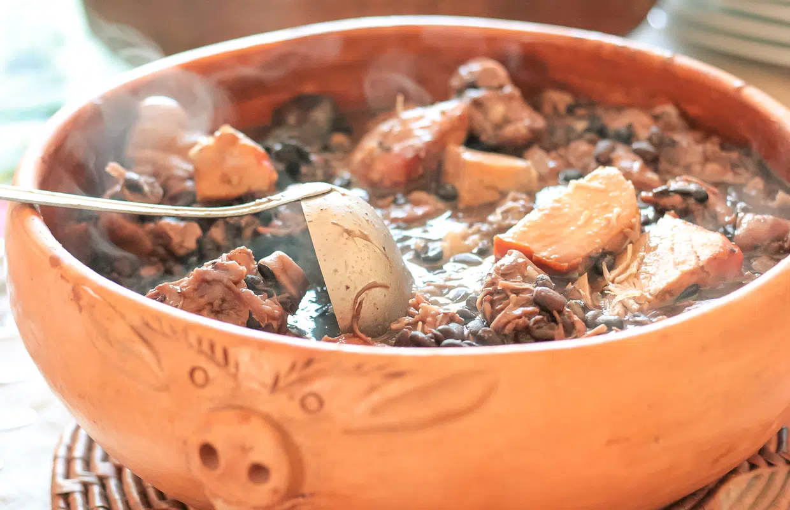
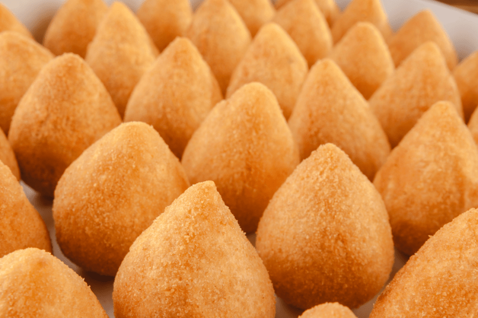
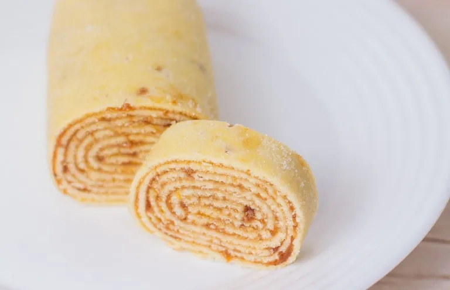
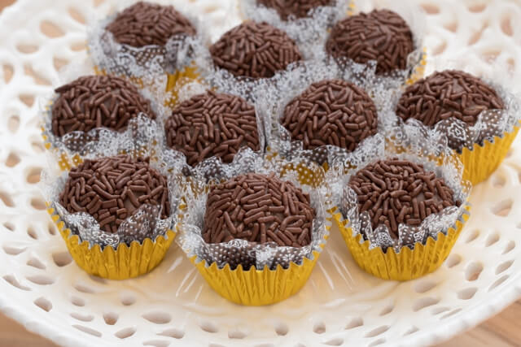

A culinária Brasileira
Descubra um país rico na cultura quando se trata de sua deliciosa comida!

O Brasil se destaca como um dos países de maior influência gastronômica por conta de seus pratos incríveis!

Coxinha
A coxinha é um dos salgados mais icônicos no Brasil. Popularizada em São Paulo. Um salgado frito com frango e recheio em formato de pera.
Existe de vários sabores e em quase todas as áreas do sudeste Brasileiro!

Bolo de rolo
O Bolo de rolo é um prato doce típico de Pernambuco recheado. Feito de uma massa de trigo, manteiga e açúcar. Com recheio de goiabada.

Brigadeiro
O brigadeiro é um doce Brasileiro de origem Paulista. Vem bem acompanhado com Beijinho!